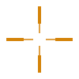
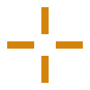
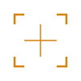
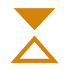

Track 1 — Pure Target / Crosshair
The primary direction. Focus is the core brand message. Kurnik helps projects stay on target. Bold, defined, simple.
Design Direction
Core insight: "Focus. Most common mistake in projects = lack of focus, lack of priorities. People drift away. Kurnik helps them win, hit the target. Target is simple."
Starting from: H02 H13 H15 H20 D18
- Goal: Find THE boldest, most defined crosshair mark
- Dropped: H29 dots (too complicated), H10 floating dots (too busy)
- Approach: Simplify, thicken, adjust proportions, test fill vs stroke, try asymmetry
- Preference: Bold and defined > subtle and delicate

H02Duplex Reticle
H13Center Void
H15Bracket CrossTrack 2 — Target + Progress
Hybrid: crosshair core with iteration/progress elements. Focus on what matters, iterate toward the goal.
Design Direction
Core insight: Combining the "stay focused" message with "iterative progress." Crosshair + chevrons = focused iteration. Crosshair + incomplete ring = target in progress.
Starting from: H13 + F20 chevrons + B03/B10 incomplete rings
- B03/B10: "Something in progress but not finished. Progress with a target in the middle."
- F20: "Very strong direction through iterations. Each chevron = a step toward the goal."
- Constraint: Must not exceed F20 complexity level (4 elements max)
- Key challenge: Must feel like a SINGLE cohesive mark, not two symbols forced together
Track 3 — Directional / Arrow
Solid, definitive direction. Road-sign confidence. Not twisted or decorative — planted and pointing forward.
Design Direction
Core insight: "B25 has nice shape. If we put in a nice arrow, kind of like on a road sign, it symbolizes direction. Solid, definitive, directional — sure. Crippled and twisted — no."
Starting from: B25 concept reimagined
- Every arrow must feel confident and solid — minimum 4px stroke
- Think: Road signs, wayfinding, industrial directional markers
- Test within contained shapes (portal + direction)
- Prefer filled shapes over strokes
Track 4 — Convergence / Tension
Two shapes in dialogue. Opposites creating productive force. Potential vs realized. The gap IS the mark.
Design Direction
Core insight: Duality as productive force — not conflict, but creative tension.
Starting from: E26 convergent triangles + F06 split diamond
- E26: "Opposites pushing against each other. Interesting and simple. Tension = productive force."
- F06: "Diamond that can be empty one direction, full the other. Duality of state — potential vs realized."
- Use filled vs stroke to create the two states
- Complexity ceiling: 3-4 simple shapes max per mark

E26Convergent TrianglesTrack 5 — Foundation / Structure
Layers, depth, and bridging. What you see on the surface — foundations matter. Connecting two sides.
Design Direction
Core insight: Infrastructure and depth — the things beneath the surface that make products work.
Starting from: G12 isometric planes + C22 bridge span
- G12: "Many layers to something. What you see on the surface... foundations matter." Infrastructure, depth of product thinking.
- C22: "Bridging the gap. Connecting two sides." Something more to do with the squares concept.
- Complexity ceiling: G12 (3 planes) = maximum
- Layer hierarchy: Use fill, stroke weight, and spacing to show depth